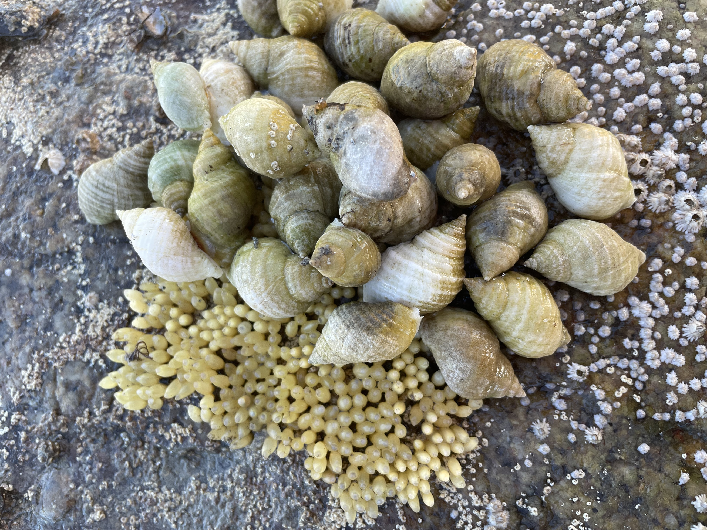
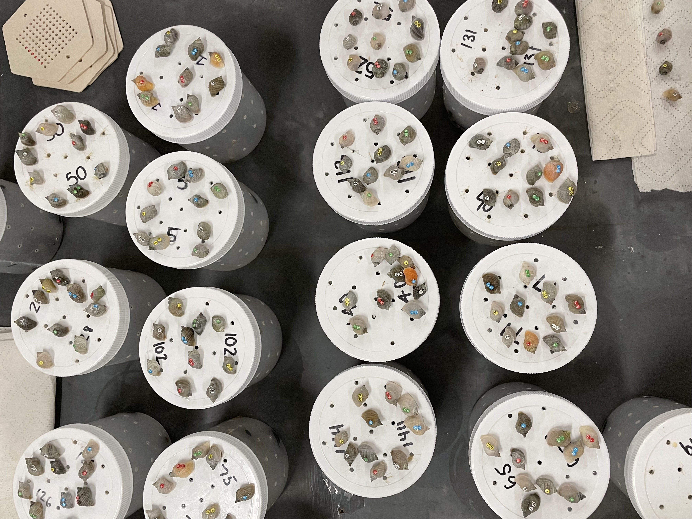
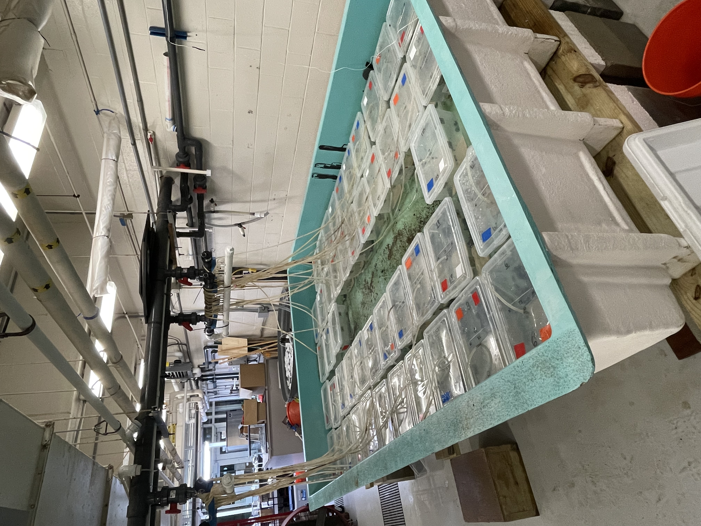
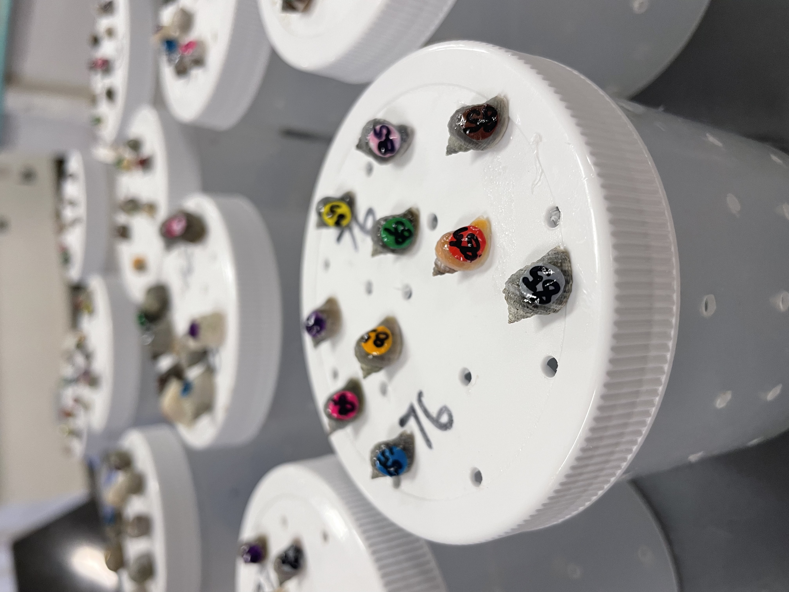
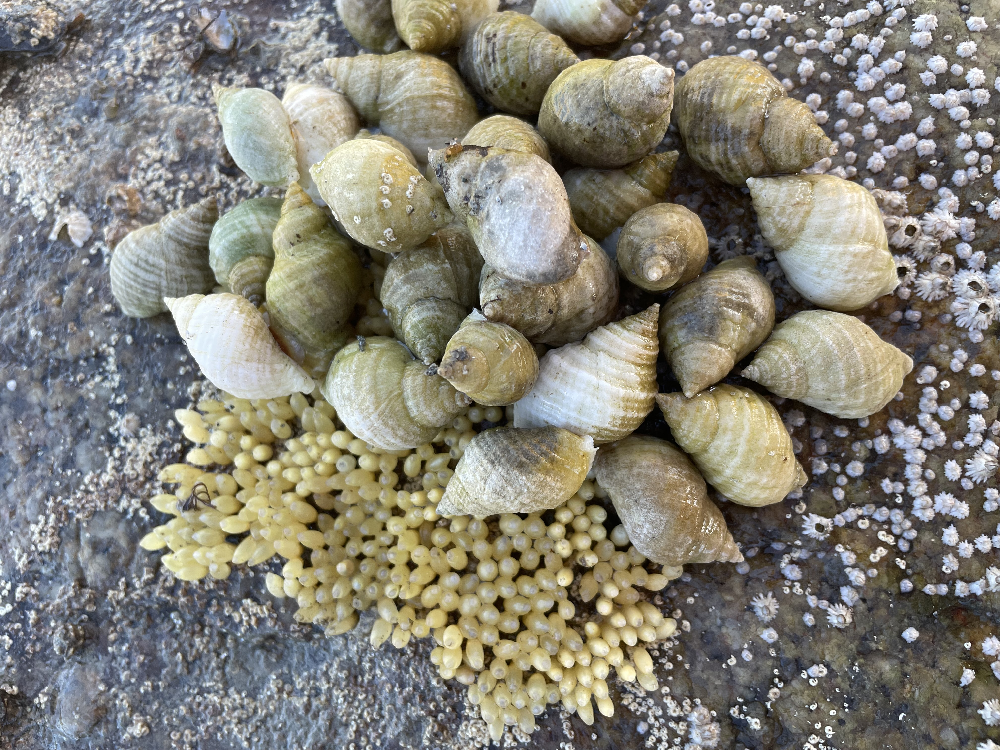
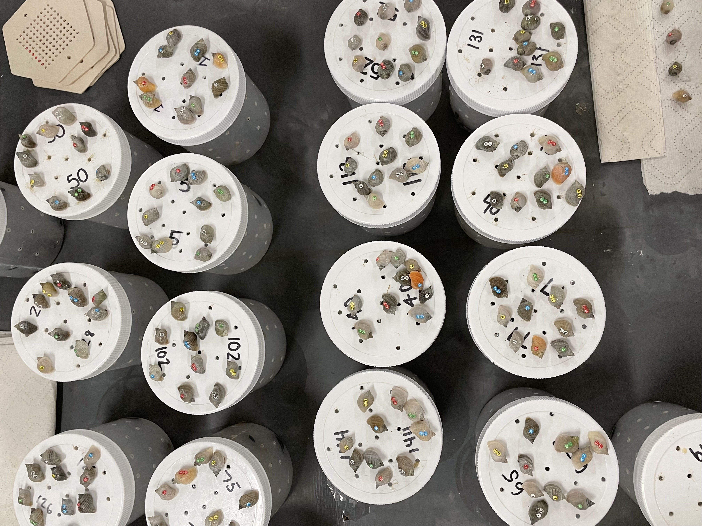
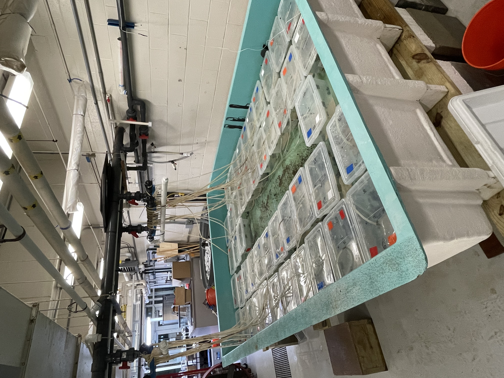
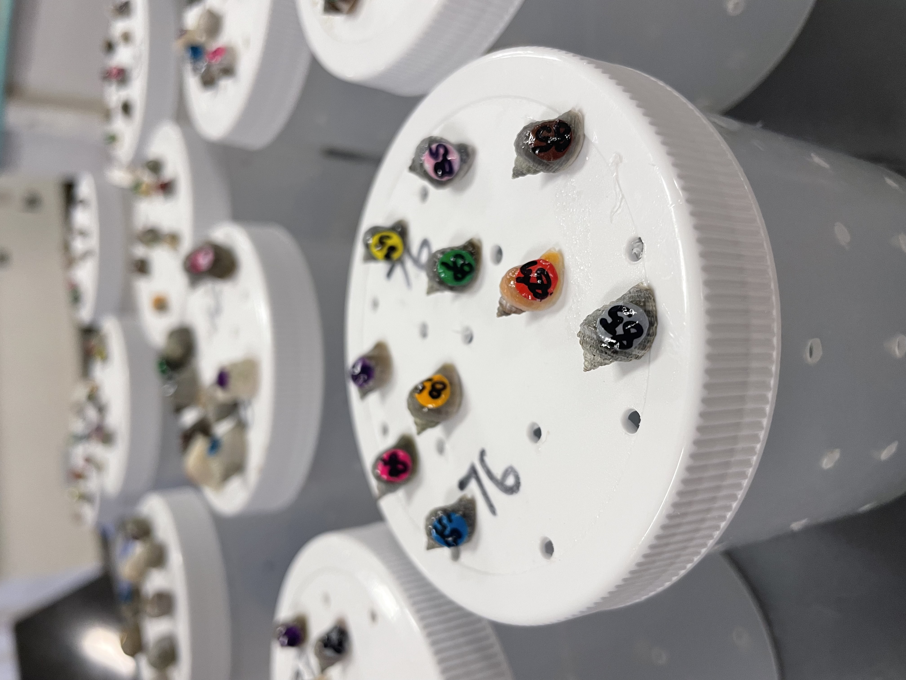
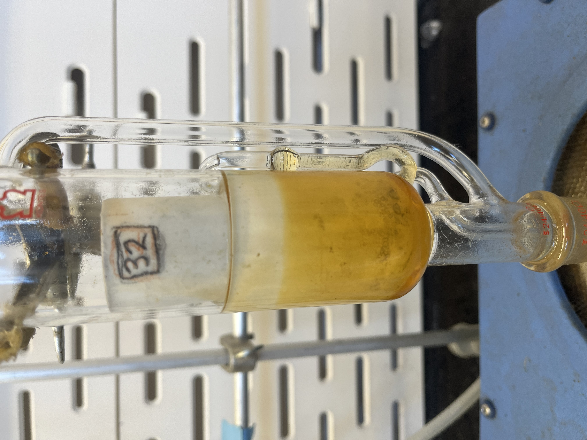
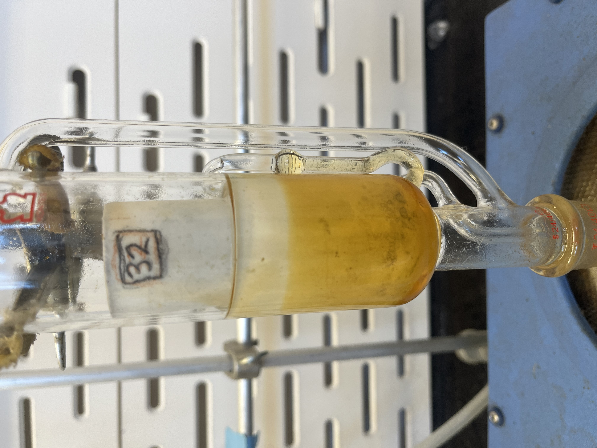

About Me
I’m a research associate and aspiring veterinarian with a background in molecular biology, field research, and emergency animal care. I love working hands-on, solving problems, and learning something new every day — whether I’m in the lab or helping with a patient.
Outside of science, I’m passionate about art and music. Creativity has taught me to be patient, adaptable, and open to trying things from a new angle. I like figuring things out from scratch and exploring across disciplines, not just staying in one lane.
I care deeply about thoughtful, ethical work — and I’m always looking for ways to combine compassion, curiosity, and collaboration in everything I do.
Research Experience
Prey Risk Responses to a New Invader (May 2022–Fall 2023)
- Examined how Hemigrapsus sanguineus disrupts community structure of a resident trophic cascade
- Individually marked Nucella and mussels to measure individual growth and refuge use
- Recorded refuge-use behavior across treatments
- Used Palmer (1982) buoyancy technique for non-destructive measure of tissue and shell mass of Nucella and mussels
- Assisted in field surveys to quantify the relationships between Hemigrapsus, Carcinus, Nucella, and mussel in New England intertidal communities

 







Impact of Predation Risk on Lipid/Protein Levels (Sep 2022–Apr 2024)
- Investigated impact of predation risk on lipid and protein content of prey using a marine system
- Extracted tissue from Nucella and mussels for PCA
- Used Soxhlet extraction technique to reduce dehydrated tissue to lipid-free organic material and a furnace to reduce organic material to ash
- Calculated protein and lipid content of prey
Children’s Emotions and Salivary Cortisol (Nov 2023–Mar 2024)
- Performed enzyme immunoassay on saliva samples
- Followed Salimetrics salivary cortisol procedure
- Calculated percent bound and determined cortisol concentrations by interpolation using 4-parameter nonlinear curve fit
Early Life Ecological Conditions and Deer Health (Oct 2023–Present)
- Transferred fecal samples into labeled tubes
- Lyophilized and pulverized fecal samples
- Weighed 0.07 ± 0.005 of dry sample and recorded exact mass
- Performed radioimmunoassay and determined cortisol concentrations
Energetic Analysis of Fish from the Northeast U.S. Shelf (Apr 2025–Present)
- Weighed and prepared various species of fish for PCA
- Used Soxhlet extraction technique to reduce dehydrated tissue to lipid-free organic material and a furnace to reduce organic material to ash
- Calculated protein and lipid content
- Created energetic curves for each species
 

Publications
- Costa CM, DiNuzzo E, Nogueira H, Donelan S, Sheriff MJ (In Review). Predator-induced changes in prey behavior alters the lipid and protein content in both prey and their resources. Submitted to Oecologia.
- DiNuzzo E, Nogueira H, Donelan S, Sheriff MJ, Costa CM, Costa VA (In Review). Emergent effects of a non-native and resident predator on shared native prey risk responses. Submitted to Functional Ecology.
Work Experience
- Technician Assistant, Bay State Veterinary Emergency (2024–Present)
- Restrained animals during triages, stats, and treatments
- Performed in-house diagnostics using IDEXX, Heska, Zoetis, and Bionote analyzers
- Observed use of advanced imaging equipment (ultrasound, X-ray, CT, and linear accelerator)
- Assisted with anesthesia monitoring and post-operative care
- Supported clients through end-of-life decisions
- Research Associate, Dr. Oliveira’s Lab (2025–Present)
- Collaborated and coordinated with team members
- Maintained detailed records of project data and progress
- Supervisor, Mellisa’s Pet Depot (2019–2024)
- Maintained proper animal husbandry
- Recognized ailments and administered medication
- Trimmed/clipped nails and flight feathers
- Assisted customers regarding pet care and nutrition
- Trained associates and delegated tasks
- Placed/received store orders
- Manager & Research Associate, Dr. Sheriff’s Lab (2023–Present)
- Trained, assigned, and supervised volunteers on project tasks
- Collaborated and coordinated with team members
- Maintained detailed records of project data and progress
- Managed equipment usage and maintenance logs
Skills
Veterinary
- Animal handling and restraint
- Veterinary medical terminology
- Specimen collection and preparation
- IDEXX, Heska, Zoetis, and Bionote diagnostic analyzers
Laboratory & Research
- Cell culture and aseptic technique
- Microscopy, RIA, ELISA
- Soxhlet extraction, PCR, gel electrophoresis
- Scientific writing
Data & Technical
- R programming (ANOVA, mixed models, curve fitting)
- Statistical figure/report preparation
- Microsoft Office, Google Workspace, Adobe Creative Cloud
Education
B.S., Biology – Cell and Molecular Concentration
University of Massachusetts Dartmouth (2019–2023)
Commonwealth Honors Program, GPA: 3.6
Awards
- John & Abigail Adams Scholarship (2019–2023)
- UMass Dartmouth Dean’s Scholarship (2019–2023)
Contact
Email: celinacosta136@gmail.com
LinkedIn: celina-costa